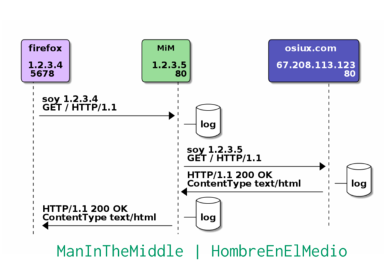

preparando varias charlas para los próximos eventos
index | CC-BY-SA | OSiUX | blog | docs
Tengo un poco abandonado mi sitio web, obviamente estoy con muy poco tiempo y en parte se debe al hecho de que voy a estar participando de varios eventos y en muchos de ellos dando alguna que otra charla, paso un resumen para invitar a todo aquél que tenga ganas de acercarse!
30/AGO al 01/SEP Hacks/Hackers BA Media Party
Antenas y redes libres, cómo evitar que censuren internet
Por su estructura descentralizada y autónoma, las redes libres son una alternativa de comunicación y pueden evitar la censura y los limites en las libertades de los usuarios que hoy día presenta internet.
05/SEP al 07/SEP CNEISI 2012
http://cneisi2012.frlp.utn.edu.ar/index.php?v=conferencias
Cooperativismo y Software Libre
En esta charla intentaremos, hablar de como compartir los beneficios económicos del Software Libre, mientras, compartimos el código. O mas simple: "¿Por que compartimos solo el código y no compartimos el rédito económico que este nos deja?"

15/SEP Taller de Comunicaciones Seguras y Software Libre
http://www.vialibre.org.ar/2012/08/25/15-de-septiembre-taller-de-seguridad-en-comunicaciones/
El taller está dirigido especialmente a todos aquellos que necesitan preservar la confidencialidad de sus comunicaciones por correo electrónico y mantener protegidos sus historiales de navegación en la web así como sus archivos almacenados en sus computadoras. Periodistas, militantes sociales y activistas necesitan medidas de seguridad adicionales para preservar sus fuentes, sus datos y actividades. Para esto, y ante la vulnerabilidad de todos los sistemas informáticos, es fundamental que aprendan a manejar programas que les permitan entablar comunicaciones seguras y navegar por la red de manera anónima sin dejar registros que puedan perjudicar sus investigaciones y acciones de campaña. Históricamente, los periodistas y activistas sociales han sido objeto de monitoreo, vigilancia y control por parte de actores que se pueden ver afectados por su trabajo, por lo que las medidas de seguridad en sus comunicaciones son indispensables.

19/SEP al 21/SEP Ekoparty
Todavía no tengo ni entradas, pero seguramente estaré hablando de RedesLibres y concretamente de BuenosAiresLibre junto al resto de integrantes del proyecto ni bien tenga confirmada mi asistencia (léase…mangazo!).
29/SEP Charlas Técnicas CaFe.IN
La continuación de las magistrales charlas ténicas trimestrales de CaFeLUG ahora resucitaron en CaFe.IN
http://in.cafelug.org.ar/2012/08/2-programa-de-charlas---2012/index.html
¿Que hice ayer? ¿Que tengo que hacer hoy?
Aplicación práctica de diversas metodologías de planificación y organización de proyectos usando Org-mode para la gestión de tareas, integración con BugTrackers, control de versiones y bases de datos. Registro de tiempos, documentación y automatización de tests.